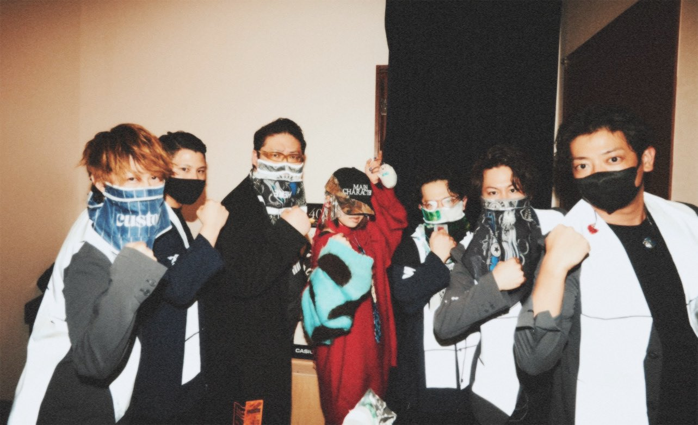

ずっと真夜中でいいのに
Zutto Mayonaka De Iinoni
atau biasa disingkat sebagai ZUTOMAYO yang berarti "Saya harap selalu tengah malam" adalah grup band rock Jepang yang memiliki karakteristik unik dan misterius.
Tentang
Zutto Mayonaka De Iinoni, yang disingkat ZUTOMAYO, adalah grup rock Jepang yang debut pada tahun 2018. Grup ini memiliki sifat yang tertutup dan tidak pernah merilis daftar lengkap anggota, serta memberikan kredit kepada
berbagai individu yang berbeda untuk musik, aransemen, dan produksi video musik mereka setiap saat. Satu-satunya anggota tetap dalam band ini adalah vokalisnya, seorang wanita tak dikenal bernama "ACA-Ne" (ACAね, akane).
Meskipun hanya ada sedikit informasi yang tersedia, grup ini mencapai kesuksesan komersial yang signifikan. Ketiga EP Zutomayo secara berturut-turut mencapai posisi 8, 1, dan 2 di Oricon Albums Chart. Selain itu, setahun setelah
debut mereka, grup ini diundang untuk tampil di Fuji Rock Festival 2019.

Profil
Band yang terbentuk pada tahun 2018 ini memiliki setidaknya satu anggota tetap yang telah dipublikasikan secara global, yaitu ACA-ne (ACAね). ACA-ne berperan sebagai seorang vokalis yang secara konsisten menyumbangkan suaranya
dalam lagu-lagu Zutomayo.
Selain itu, ACA-ne juga sering terlihat menciptakan beberapa lagu Zutomayo secara independen. Seperti banyak band Jepang yang mengikuti jalur yang sama, seperti Yorushika, band ini, khususnya ACA-ne, senantiasa menjaga
kerahasiaan identitasnya dan wajahnya dari publik.
Album
ZUTOMAYO telah merilis beberapa album resmi di banyak platform seperti Spotify, YouTube dan media lainnya.
Berikut adalah album-album yang telah rilis resmi di Spotify :